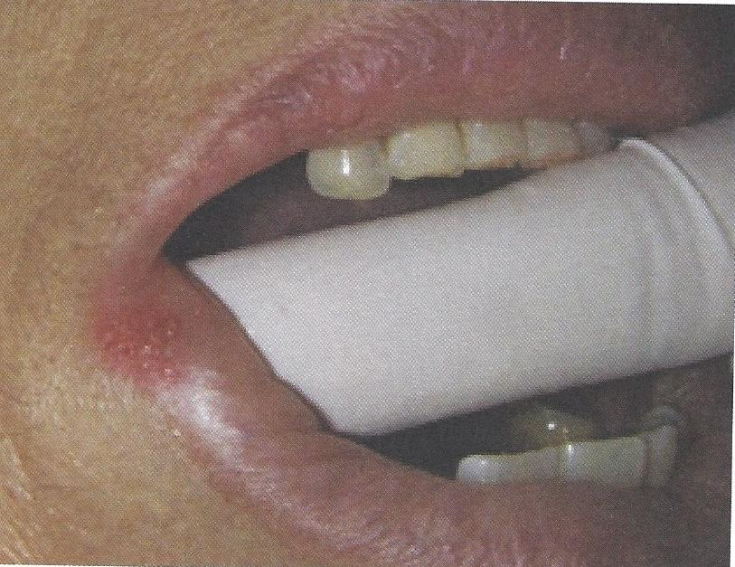
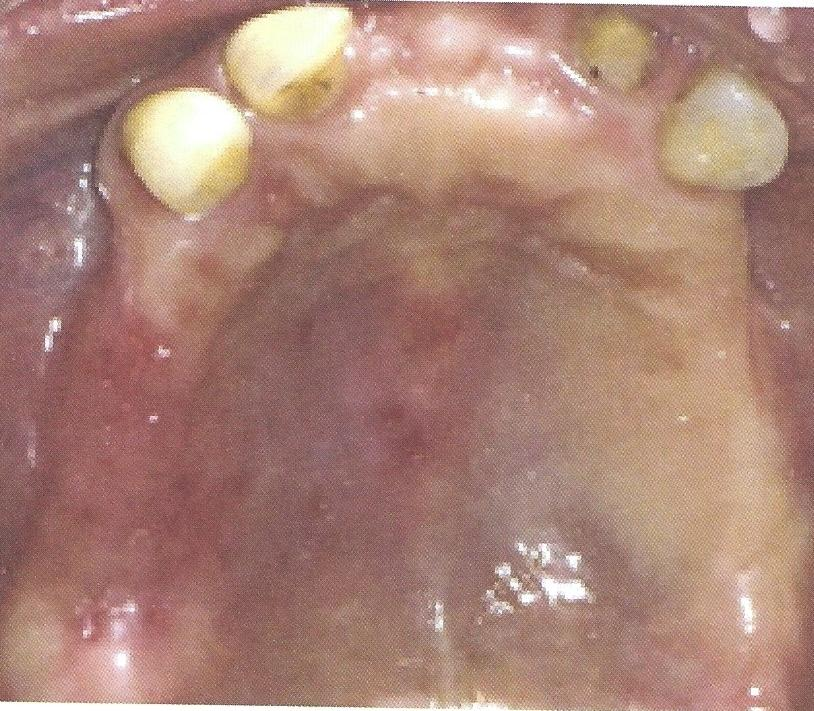

แผลจากเชื้อ Herpes simplex virus ภายในและนอกช่องปาก
เริ่มจากมีอาการเจ็บแปล็บ ๆ และมีตุ่มน้ำใสก่อน
แล้วแตกออกเป็นแผลขนาดเล็กหลาย ๆ แผลรวมกันเป็นกลุ่ม
พบบริเวณริมฝีปากด้านนอก เพดานแข็ง เหงือกยึด
รอยโรคมักหายได้เองภายใน 2-3 สัปดาห์
การใช้ครีม acyclovir 5% ทา ช่วยให้แผลหายเร็วขึ้น